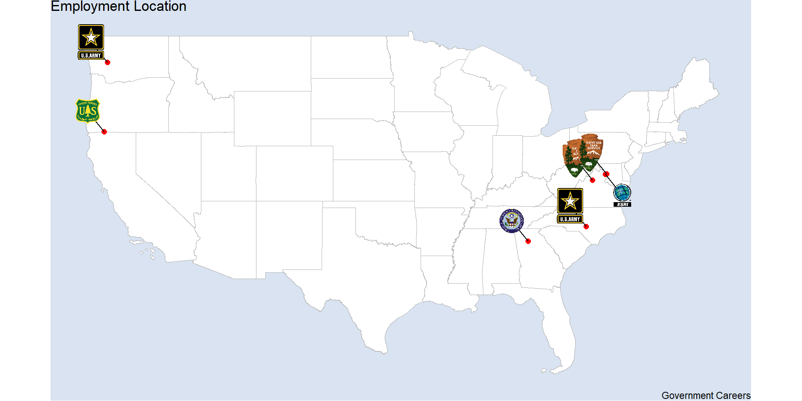
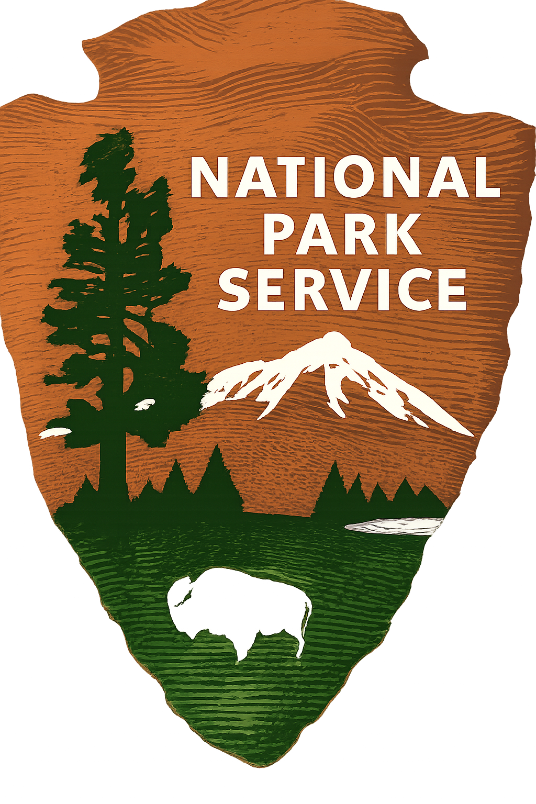
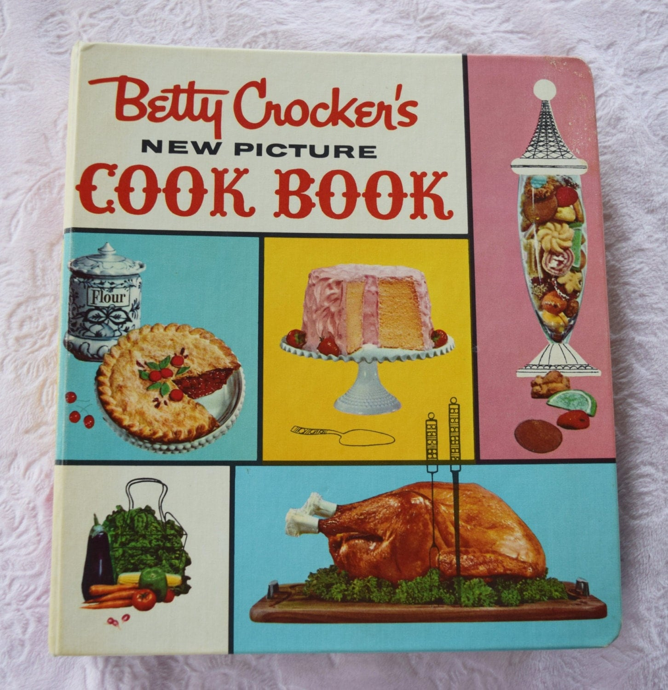
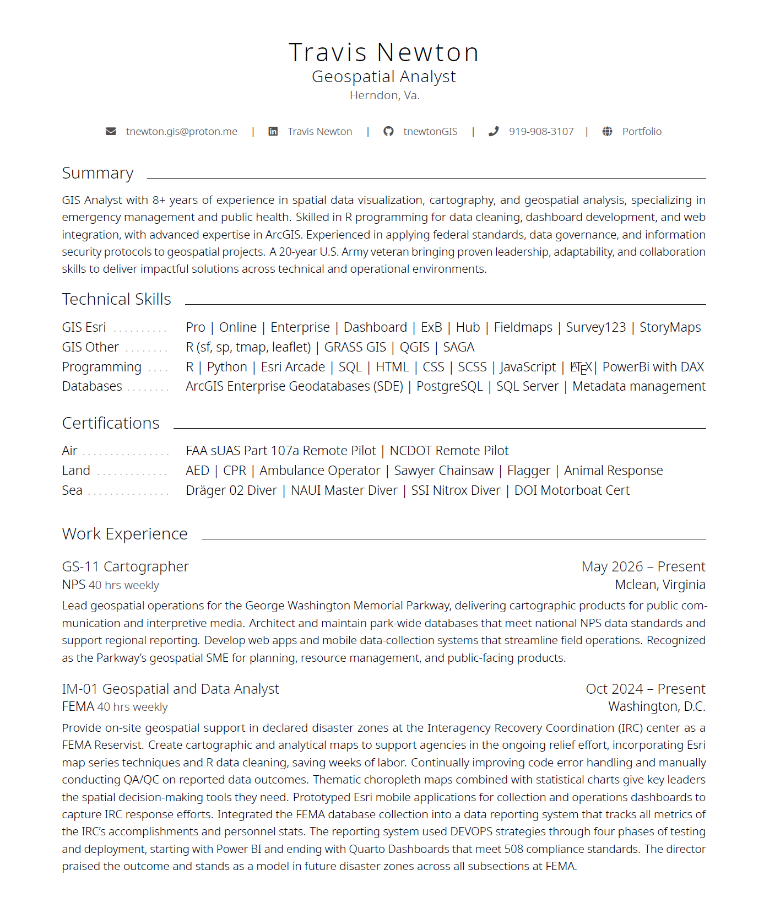
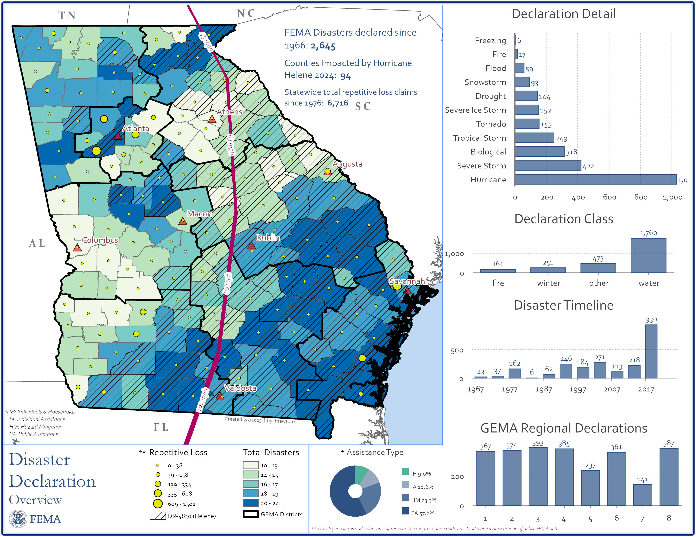
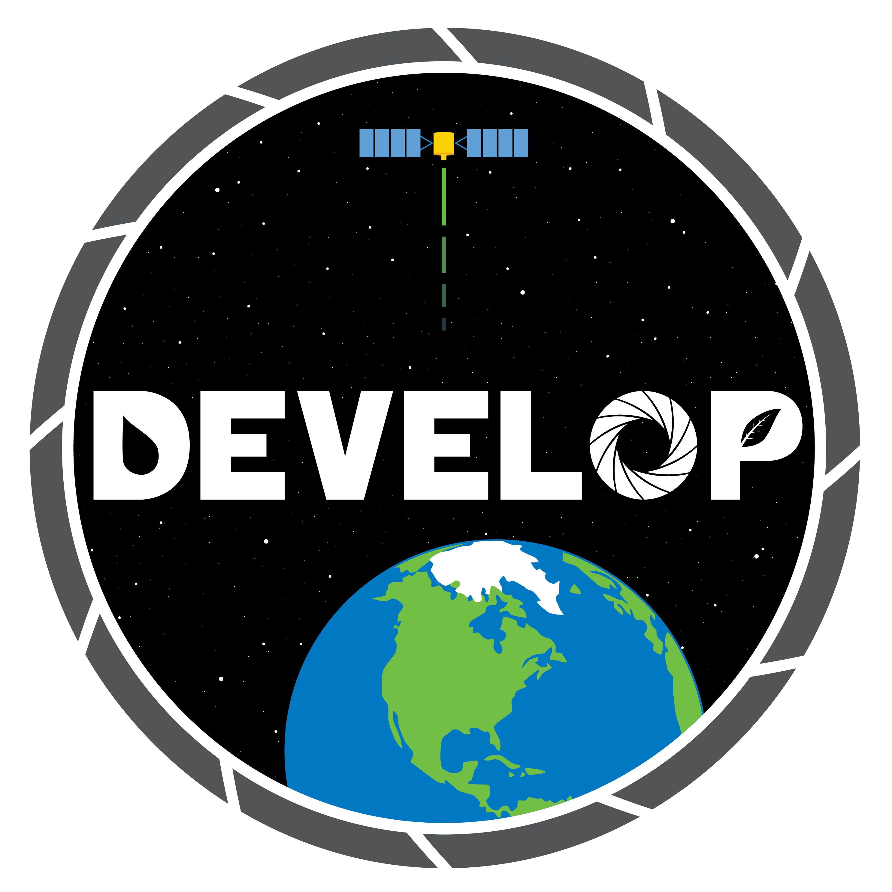

2026-10-29
Ask any question throughout
Reach out with questions
Masters not a PhD
Currently on seasonal with NPS until 14 Nov 26
Past classes mostly undergrad - geared much differently

NASA DEVELOP
pg.1-15
pg.15-21
pg.22-28
From
Jobs
U.S.Army
Global Trek Adventures
DEVELOP
Esri
Esri
NPS
USFS
FEMA Reserves
NPS

Tell me about yourself
Degree?
Where you from (country, state, city)?
3a. Do you have any special skills? (eagle scout, baseball player, etc)
3b. Do you have a fun fact that’s interesting about you?
Describe your project?
What are your ambitions after DEVELOP?
How will DEVELOP get you where you need to go?
Elevator Pitch
These questions can help you with an elevator pitch for your time at NASA [Neda…great portfolio page!]
Tips for Success
Be GenericCartography
Don’t worry about cartography. DEVELOP conducts studies of natural/human science phenomenon using EOS. Simple maps with associated graphs and tables or an interactive app are better.
Next:
Whats important to you?
Golden Handcuffs
The invisible prison cell of 3-5 years preventing an employee from leaving the company or forfeit 401k contributions by the employer.
Sectors drive job opportunity
GIS core tasks
Data Analytics
Scientific Discovery
Industries - Commerce, Health, Petroleum
Job Sites
Pro
Each degree pays a little more and allows entry into a position
Con
PhDs start career 2-7 years after counterparts
Companies prefer undergrad to masters. cheaper, longevity
Pay yo’ Dues
Portfolio (yes)
Project Showcase (yes)
Resume 2page vs CV 10page
Business Card
Front - contact info
Back - QR scan code, portfolio / project
Networking
Build out Linkedin, great ideas, job & postdoc opportunity
Don’t - let in non-industry, people you haven’t met, or people without pics
Next:

Favorite Toolbar
Once employed, 90% of work done from employee computer. Export toolbar to GITHUB and clone to personal computer(s).
Next:
Most Cases (NPS, ESRI) : GIS Core
50% Collection and Reporting
20% Database Management
10% Cartography
10% Analysis
10% Admin
NPS Region +
Other NPS
Shenandoah: physical scientist biologist, environmental scientist
Hydrologist (water source coordinator) - Bureau of Indian Affairs (Multiple States - OR, WA, SD, MN, OK)
Hydrologist - Bureau of Reclamation (Albuquerque, NM)
Research Ecologist Statistician - Smithsonian (Front Royal, VA)
Airforce Hydrologist - Airforce (Kelly AFB, TX)
Interdisciplinary (Hydraulics / Hydrologist) - Army Corp of Engineers (New Orleans, LA)
Ecologist - National Park Service (Grand Lake, CO)
Examples
Static maps
gptool vs rscript
Tree App 400hr project / 2 = 200hr
Typical apps
GIS Request
Issue Tracker
Lamp Tracker
4th Jully
Section 03
Next:
location, duty title, hours, salary
Soft Skills
talking with intellects and field crews
people skills - charm, joke, smile, be personable/ relateable
Job Applications - read the requirements and duties - get a feel of requests (click apply)
Reports
Quarto and Typst
Tie findings to EPA, DEQ rules and regulations - buzzwords like “Compliance, stakeholder, commission, FONSI, erosion and setiment control, etc”
Executive Summary (dumb your phd down into a 4-6 pages)
Summary Reports (summarize your phd in 2 pages front and back)
Understand and articulate your work in the larger project scheme (not just hydrology)
Stand up for your work, process. Non-GIS do not know - you must educate them
When was the last time you failed at something? -pencil in something
Job Features
MS4 Storm Water Analysis - Gold Mine (showcase a study)
FEMA Flood Insurance - Mapping flood scenarios
Data Centers - Environmental Impacts
Tech Features
Functions / Definitions in your code with code comments (clean code is happy code)
Dashboards (Shiny or ExB)
Field Collection from A-B
A heavy automation example (simple - but manually take weeks) (fema buildings example)
Next
Showcase various maps
Dashboard Quarto


NASA 2026